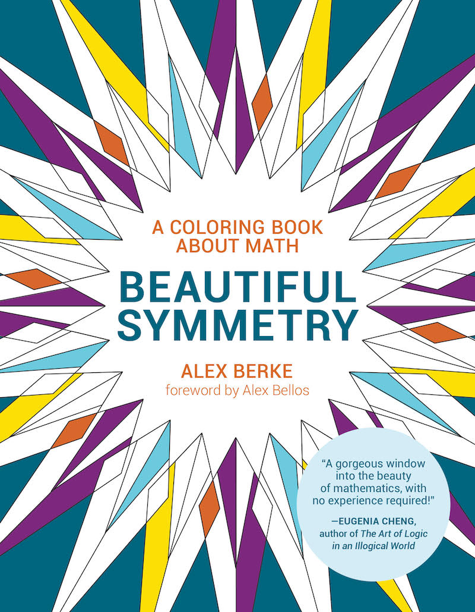
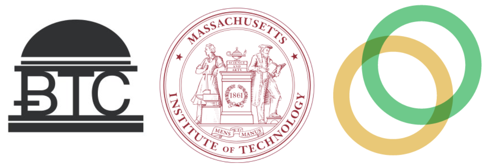
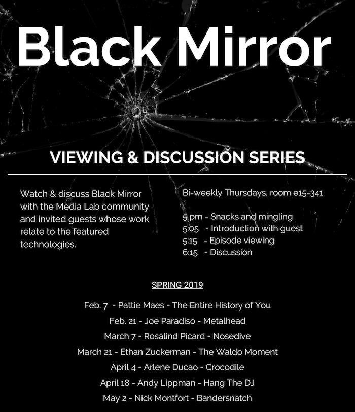
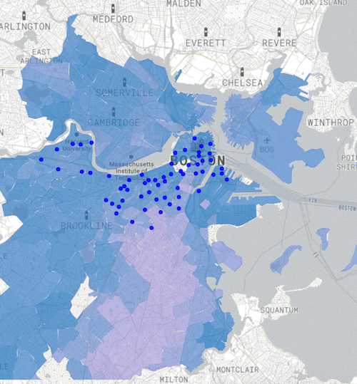

alex berke
a shortlist of my work from 1.5 years at the MIT Media Lab
Sept 2018 - January 2020 | City Science
BEAUTIFUL SYMMETRY: A COLORING BOOK ABOUT MATH
https://mitpress.mit.edu/books/beautiful-symmetry
The MIT Press is publishing my book March 2020.
This book is an introduction to the mathematics of symmetry (group theory). The math is explained with illustrations and challenges the reader to deeply engage with coloring puzzles throughout. This book is dual medium, and the first of its kind. All of the content comes to life in interactive animations with the free online version.
I created this book to make math more accessible to a broad audience and it has already been used as a resource by educators all over the world.
CRYPTO VOTING & U.S. ELECTIONS: REALITY & SCIENCE FICTION
I extensively researched cryptographically secure voting systems in the context of U.S. elections and published my work in an accessible 2-part series. One part is about reality. The other part is science fiction.
Crypto Voting & U.S. Elections: Reality
On the security of blockchain, internet, and end-to-end verifiable voting systems, including the cryptography behind how they work.
https://medium.com/mit-media-lab/crypto-voting-us-elections-reality-554214b5c84
Crypto Voting & U.S. Elections: (Science Fiction) Short Stories From Potential Futures
These stories consider two potential futures for US democracy, branching from our present. One is dystopian, the other utopian.
https://medium.com/@aberke/crypto-voting-us-elections-science-fiction-fb1e4af2d13a
This timely work has been heralded by experts, such as the director of MIT’s Digital Currency Initiative, and the President of the U.S. Vote Foundation, who republished the work under the title "If You Ever Read An Article on Online Voting: Make It This One": https://usvotefoundation.org/blockchain-mobilevoting-lostchoices-plutocracy
[BIKE] SWARM
I designed a synchronized light system for bicycles that builds a unified presence for cyclists on the road, whereby riders collaboratively enhance their shared safety while creating a visual representation of community.
https://media.mit.edu/projects/bike-swarm
I led both the conceptual and technical work to build and test this system, with collaborators in the City Science group. This project demonstrates my design, software, hardware engineering, and entrepreneurial skills.
DesignX
[bike] swarm was accepted to MIT’s competitive DesignX Venture Accelerator Program - https://designx.mit.edu
I also authored 2 accepted conference papers for [bike] swarm with City Science collaborators: CSCW paper, SAI computing paper
WINNING A CRYPTOCURRENCY ARBITRAGE & TRADING COMPETITION AT MIT
I won a competition in writing algorithmic cryptocurrency trading programs. The competition was hosted by the MIT Bitcoin Club over the MIT 2019 IAP term.
I won this competition by designing and implementing the most successful arbitrage strategy. I then wrote a popular blog post about cryptocurrencies and arbitrage, and other takeaways from the experience: https://medium.com/celohq/arbitrage-and-winning-a-cryptocurrency-trading-competition-at-mit-32e183766e42
BLACK MIRROR DISCUSSION SERIES
I co-designed and facilitated a biweekly discussion series about emerging technologies and the ethics around developing and deploying them.
This series brought together the directors of Media Lab research groups and the MIT community, in thoughtful discussions after watching Black Mirror episodes. These events gained popularity and often reached space capacity.
https://media.mit.edu/posts/black-mirrorINCOME, RACE, BIKES
Is the placement of bike-share docks equitable? I crunched bike-share and population demographic data and developed an interactive map to explore this question visually, across multiple cities and multiple years.
 https://aberke.github.io/income-race-bikesthesis
PRIVATE LOCATION DATA FOR THE PUBLIC GOOD AND URBAN UNDERSTANDING
My thesis leverages machine learning and data science tools to make otherwise highly private location data, which is ubiquitously collected from the pubic via smartphones, safe and useful for cities and public good projects.
[link]This work includes development of a novel method for synthetic data generation for use in modeling.
While at the Media Lab I have also...
- - Collaborated with City Science colleagues on the CityScope project exhibitioned at the Cooper Hewitt museum
- - Helped the City Science team develop the initial software for the CityScope Grasbrook project
- - Coauthored a paper with colleagues in the Human Dynamics group, which we presented at a conference at the Oxford Internet Institute
- - Designed and engineered a living module for the City Science Escape Pod
Before coming to the Media Lab I worked for years as a software engineer and technologist in industry, at the intersection of technology and social impact. I have extensive experience in developing highly available and distributed systems, human-centered design, and working with startups as well as large companies.
Directly before the Media Lab I worked as a software engineer on Google Search, on a team tasked with news credibility and fighting disinformation.
I addition I...
- - Worked as a senior engineer on Clinton's 2016 election campaign, developing software that helped the campaign raise hundreds of thousands of dollars online, and tools for organizers and voter protection.
- - Was an artist in residence at Pioneer Works
- - Was a multi-year mentor for the HackNY program which connects computer science students with NYC startups
- - Was a senior software engineer and systems architect for a startup developing intelligent mobile phone networks (acquired)
- - Blue Ridge Labs Fellowship: Was lead engineer on a team developing systems for low income Americans
- - Was lead engineer for the Huffington Post’s Labs group
...And more
A portfolio of my work prior to the Media Lab is available at https://aberke.github.io/pfolio